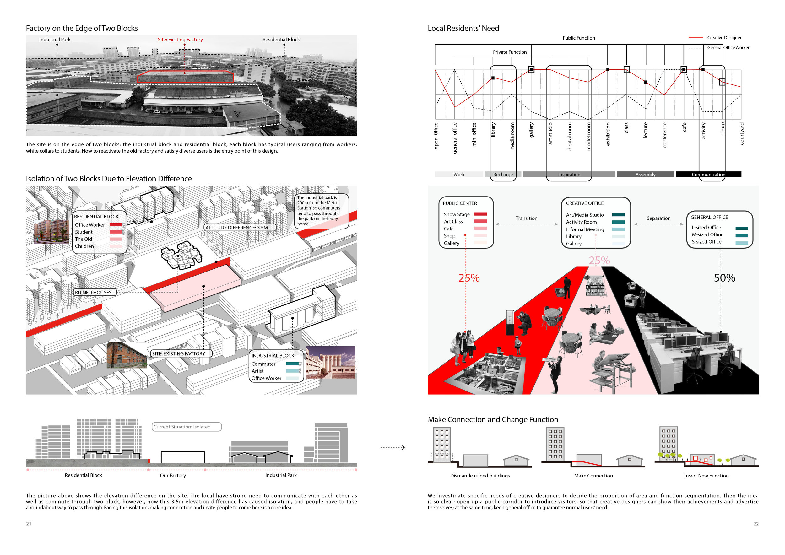
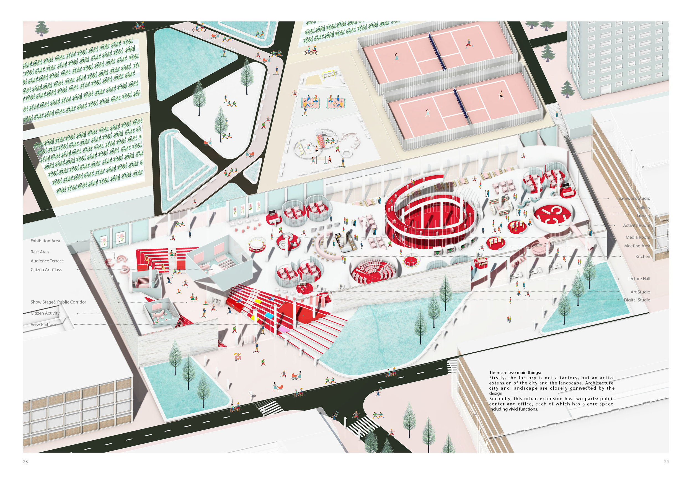
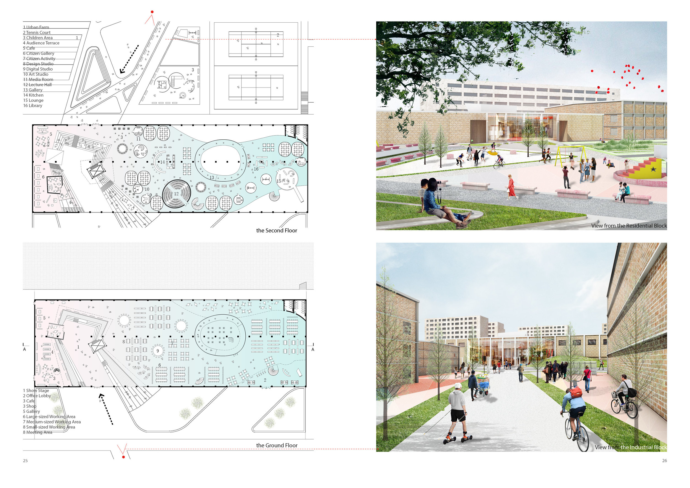

Interior Design
This interior design project is focusing on the adaptive reuse of a factory.

A Green Linkage to Reactivate the Site
By adding a green linkage with several green space on it, I transformed the ruined industrial parks and some idle space into a public space system and bring back life to this site.

Four Themes in the Park
I created four themes according to my research of the target users near the site. For each group of people, I designed the public space that fits their needs.

Four Views of the Park
The four perspectives are showing the different ambience of the four themes. Activities happening in the four places are different.